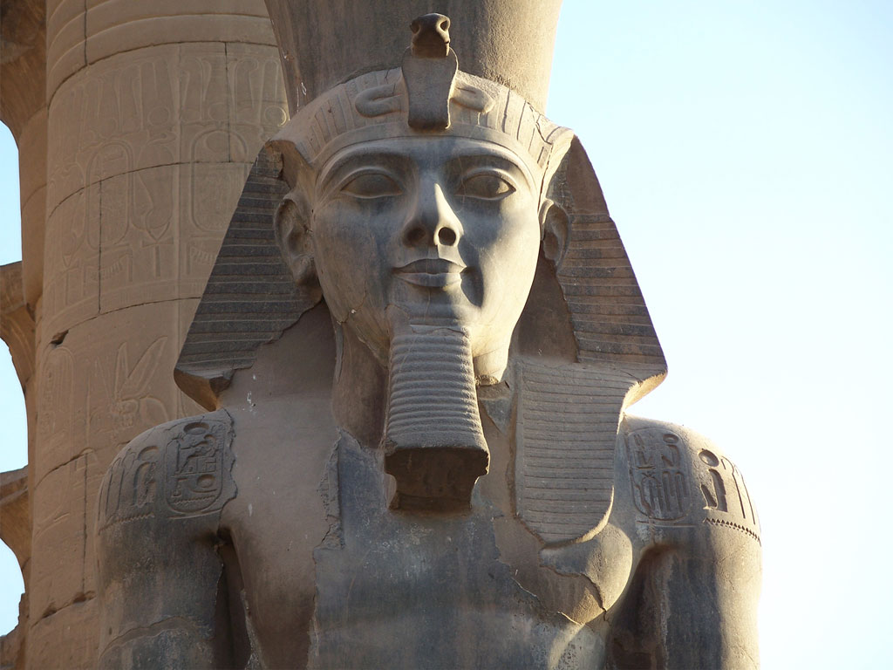
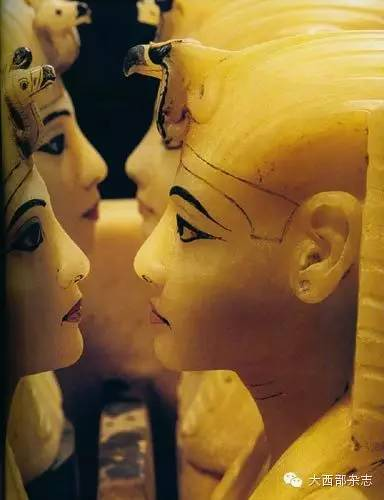
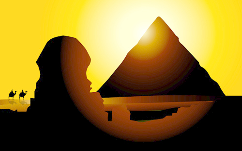

拉美西斯二世（Ramesses II，前1314年—前1237年）古埃及第十九王朝法老（前1304年—前1237年在位），其执政时期是埃及新王国最后的强盛年代。法老塞提一世之子。拉美西斯二世进行了一系列的远征，以恢复埃及对巴勒斯坦的统治。拉美西斯二世下令在东北尼罗河三角洲新建一座城市为首都，并将其命名为培尔—拉美西斯（美西斯的宫殿）。90到96岁（代考）岁逝世，一生有8个正式的妻子，还有将近100个妾。共96个儿子，60个女儿。
阿布·辛拜勒神庙被看成是拉美西斯最伟大的作品，是名副其实的古代建筑瑰宝。四尊从山体岩山中凿出的巨型雕像高20米，象征着坐在宫殿大门口的法老，如今它们已经变成了埃及文明的象征。意大利著名的埃及学家之一赛尔乔?多纳多尼（SergioDonadoni）教授解释说：“这真是一座令人难以置信的建筑，它将埃及古典建筑的建筑元素带入了深山中。”
这座神庙建在一个山坡上，开凿的深度有60米，它本意是供奉三位主神阿蒙、拉、布塔，但实际上它只为一位“真神”——拉美西斯本人服务。在阿布辛拜勒庙附近，还有一座献给他的妻子奈菲尔塔利（Nefertari)的较小的岩窟庙哈索尔神庙。庙的正面排列6座雕像，队拉美西斯二世的3座外，还有补充描绘为哈托尔（Hathor)神形象的奈菲尔塔利的3座雕像。
但阿布·辛拜勒神庙的命运却是多灾多难的，建成后不久，一场地震使它蒙受巨大损失，许多石柱和雕像断裂，受损的部分还包括神庙正面的整个上半部。
拉美西斯二世身高1.76米，比普通人高出10厘米。他发色鲜红，不同于常人，这在他的木乃伊上清晰可见。并且是当今保存最完好的古埃及木乃伊之一。